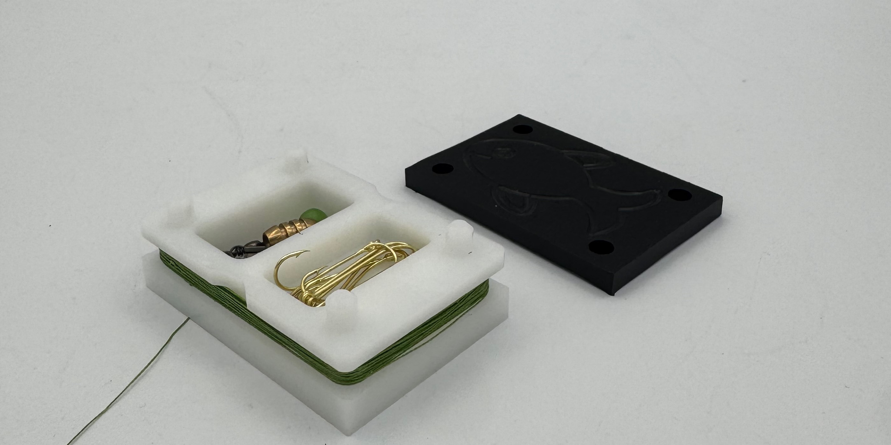
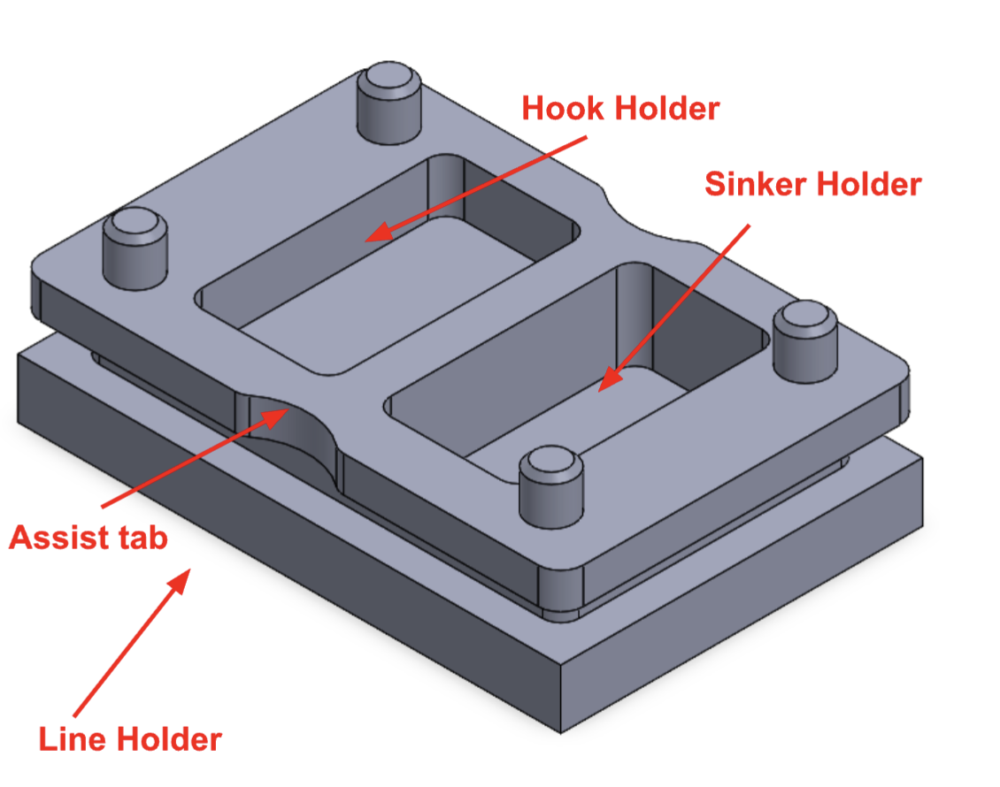
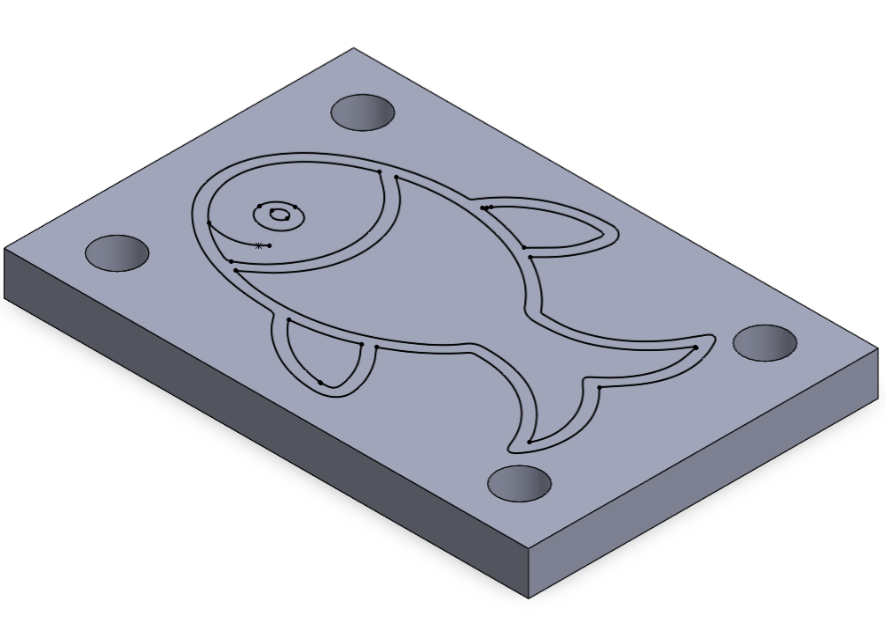
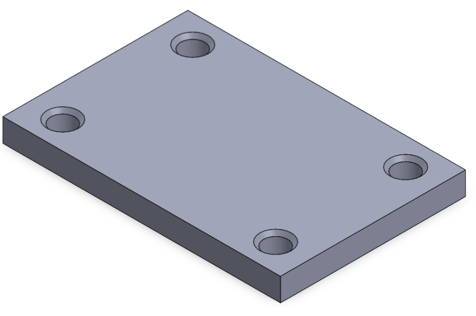
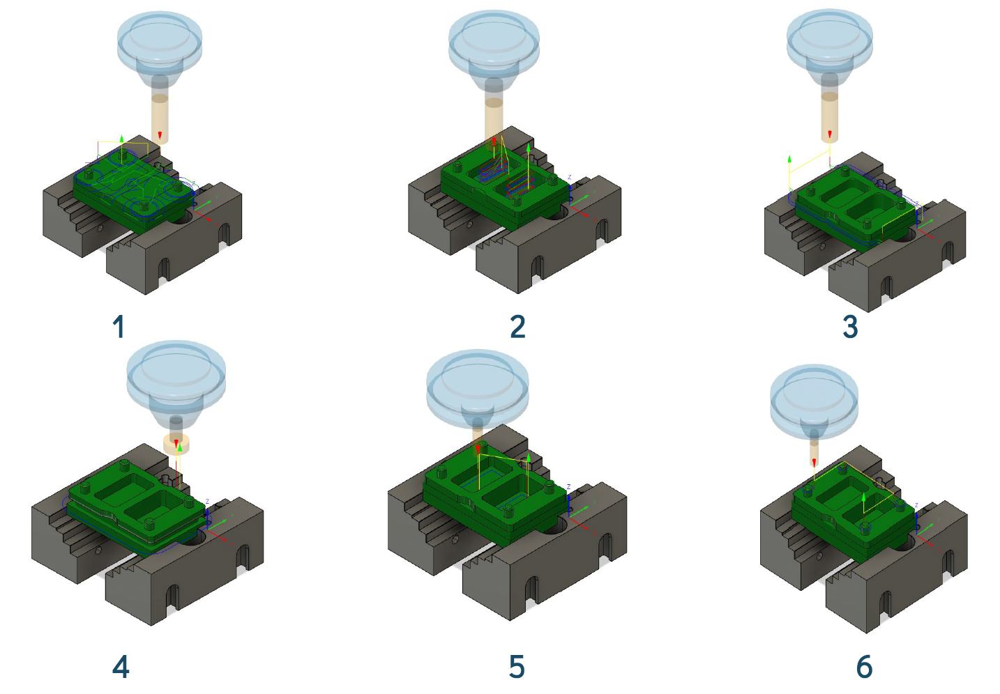
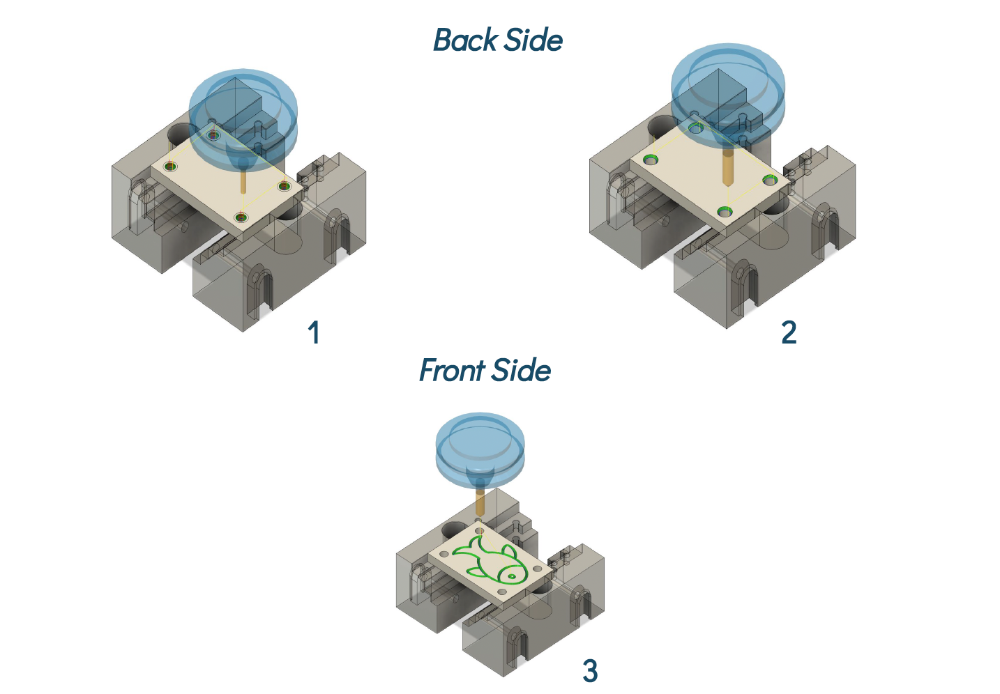
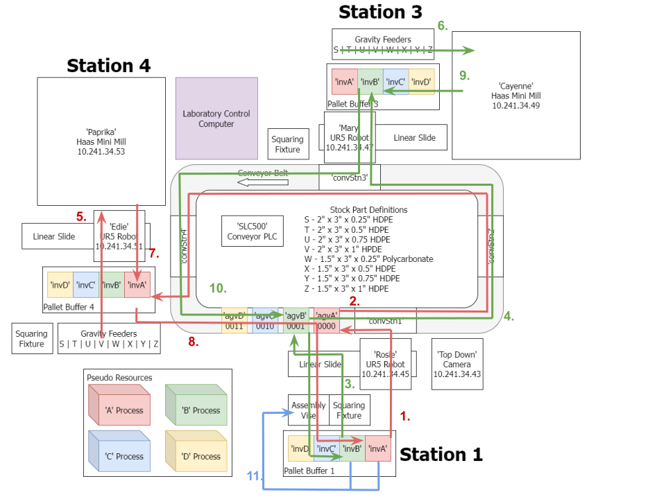

Compact Fishing Kit Prototype
A compact fishing kit developed for ME345 Automation & Manufacturing Methods. This project combined product design, CNC process planning, ADML routing, and manufacturing strategy development, culminating in the automated production and final assembly of completed products.
Final Product
The compact fishing kit was designed as a portable two-part product consisting of a machined body and lid. The final design stores hooks, sinkers, and fishing line in a compact form while remaining easy to open, close, and carry.


Product Design
The product was designed as a two-part assembly consisting of a main body and a lid. The body includes dedicated storage features for hooks, sinkers, and fishing line, while the lid adds a machined engraved fish graphic and alignment holes for assembly.



Manufacturing Strategy
The body and lid were planned as separate machining workflows. The body emphasized pocketing, contouring, and chamfering operations, while the lid required hole machining, chamfering, and front-side engraving.


ADML Routing Plan
In addition to designing the part geometry and machining operations, this project required planning how the product would move through the ADML system. The routing strategy coordinated machining, robotic handling, pallet transport, intermediate inventory, and final assembly.

ADML Manufacturing & Assembly
The final stage of the project involved manufacturing and assembling the compact fishing kits within Boston University’s Automated Design and Manufacturing Laboratory (ADML). The system integrates CNC machining, robotic handling, pallet transport, and automated assembly.
Key Takeaways
Design for Manufacturing
This project strengthened my ability to design around both product function and manufacturing constraints, especially when part geometry had to align with tooling, fixturing, and assembly requirements.
Automation Planning
I gained experience translating a product concept into a complete manufacturing workflow involving CAM, routing logic, machine allocation, and assembly coordination within an automated lab environment.